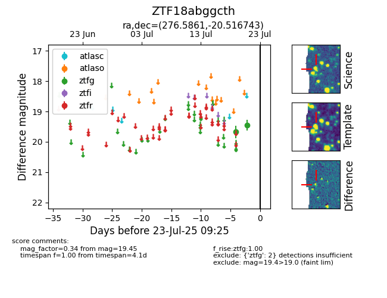

Target ZTF18abggcth at 2025-07-23 11:52, see:
FINK: fink-portal.org/ZTF18abggcth
Lasair: lasair-ztf.lsst.ac.uk/objects/ZTF18abggcth
ALeRCE: alerce.online/object/ZTF18abggcth
alt names
ZTF18abggcth (ztf,fink)
coordinates:
equatorial (ra, dec) = (276.5861,-20.51674)
galactic (l, b) = (11.8661,-3.94113)
photometry
last ztfg=19.45
2 ztfg detections
